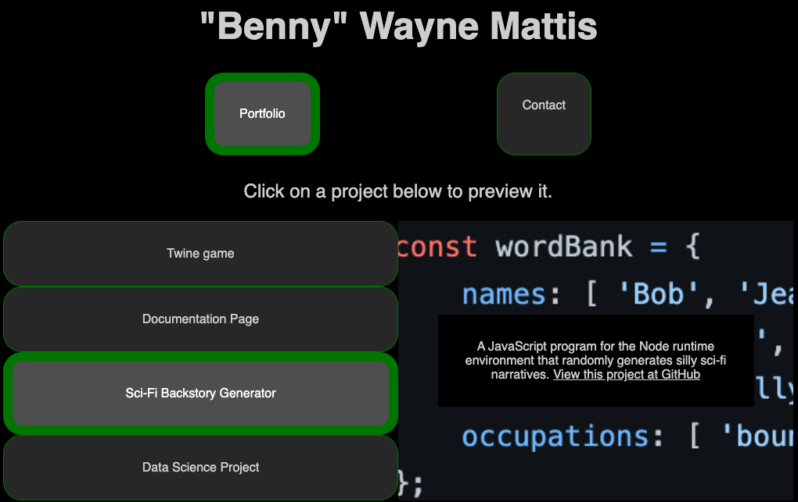
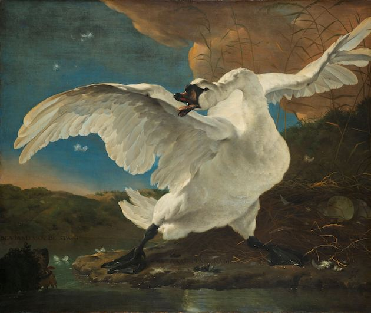

Projects
Coding (web design and development)
As a lifelong learner, I continue to seek out new skills to master in web development through the completion of various projects. Such projects have included Montgomery College class assignments, itch.io game jam submissions, Catchafire volunteer projects, Codecademy projects, and projects completed for certifications on FreeCodeCamp.
Writing (philosophy and interactive fiction)
Despite being out of academia for several years now, I continue to engage in independent scholarship. Most recently, I was glad to participate in the Critical-Creative Philosophy game jam with a submission comparing works of Augustine and Nietzsche. My latest aspiration is to get a paper published in a peer-reviewed journal.